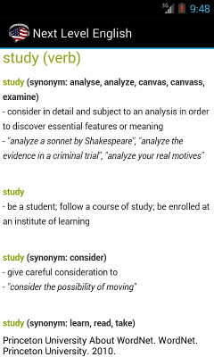

Lexikální vysvětlění termínů a příklady ve větách jsou k dizpozici díky obsáhlému slovíku Wordnet. Každá kartička obvykle obsahuje popis významu v angličtině a příklady synonym. Wordnet objasuje několik různých významů a zobrazí se v různých spojeních.
Někdy se stane že hledaný exaktní termín není k dispozici a proto se zobrazí nejpodobnější význam.
Stránka wordnet je k dispozici pouze online vzhledem k velikosti databáze.